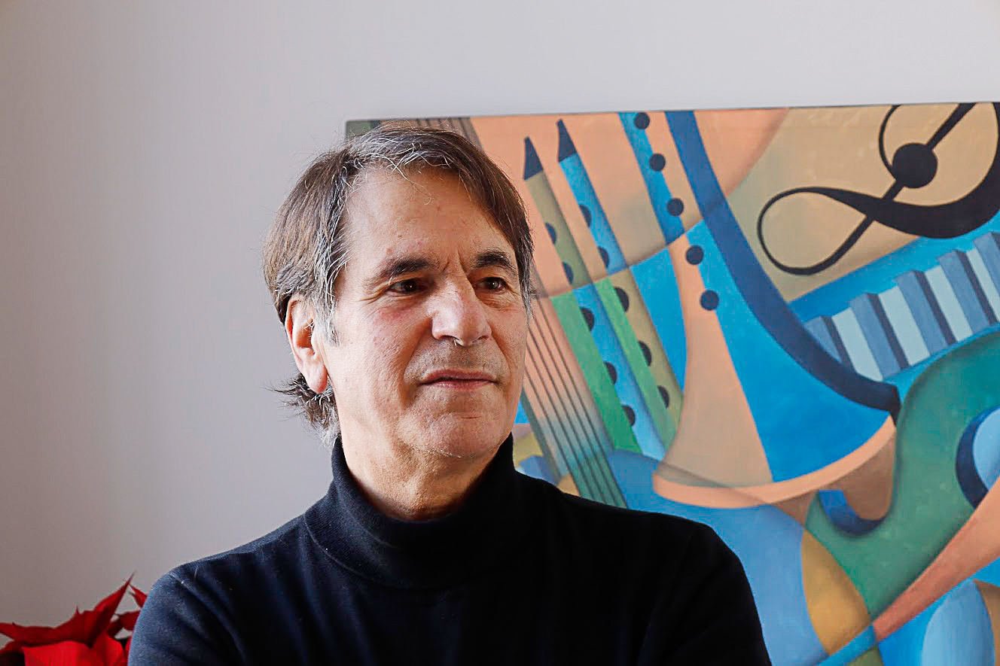

Une vie en images
Pere Lluís León vit à Premià de Mar, une petite ville côtière au nord de Barcelone. Il commence ses études de dessin très jeune dans une académie privée, avant d'intégrer l'École de la Llotja pour étudier l'illustration — l'une des plus anciennes écoles de design d'Espagne — puis l'École Massana d'Arts et Design de Barcelone.
Sa vocation pour les arts graphiques le conduit à Paris, Bruxelles et Rotterdam, où il alterne vie professionnelle et études de peinture intensives à travers l'Europe. De retour à Barcelone, il se spécialise dans l'illustration médicale et scientifique, une discipline qui marquera deux décennies de sa carrière.
Il collabore avec la Faculté de Médecine de Bellvitge, l'Hôpital Clínic de Barcelone, le Vall d'Hebron, l'UAB, l'Hôpital Lapeyronie de Montpellier et de nombreuses institutions académiques internationales. Ses illustrations anatomiques et chirurgicales deviennent une référence pour les chirurgiens, professeurs et éditeurs de livres médicaux spécialisés à travers le monde.
Tout au long de sa carrière, des milliers d'illustrations ont été publiées dans des ouvrages médicaux et des revues scientifiques internationales. Aujourd'hui, il alterne illustration médicale, design graphique et peinture expressionniste : des toiles chargées de couleur, d'humanité et de lumière méditerranéenne qui explorent la condition humaine d'un regard profondément personnel.